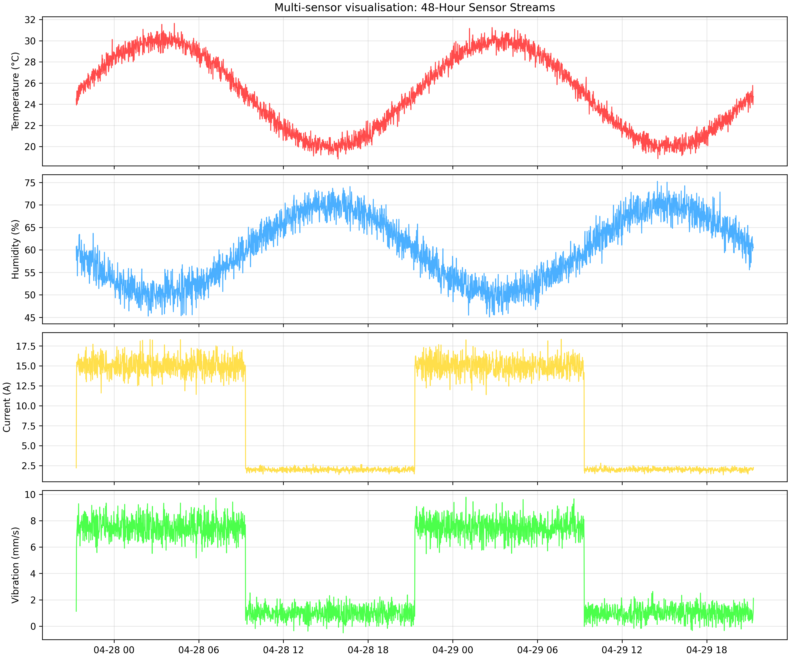
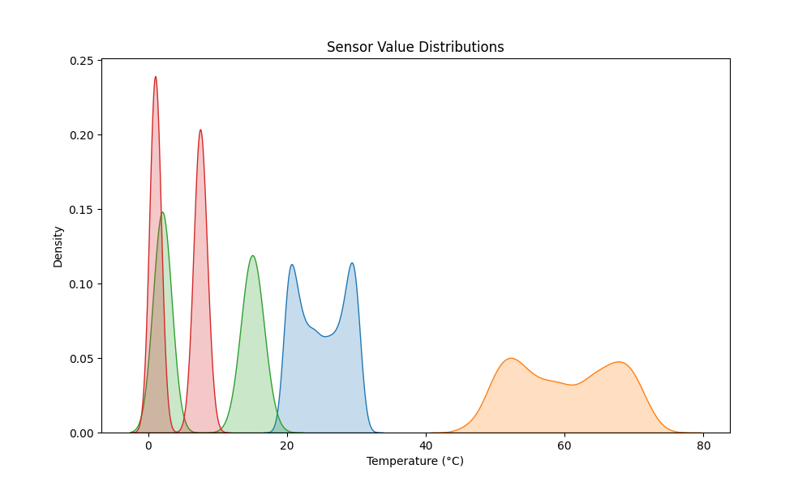
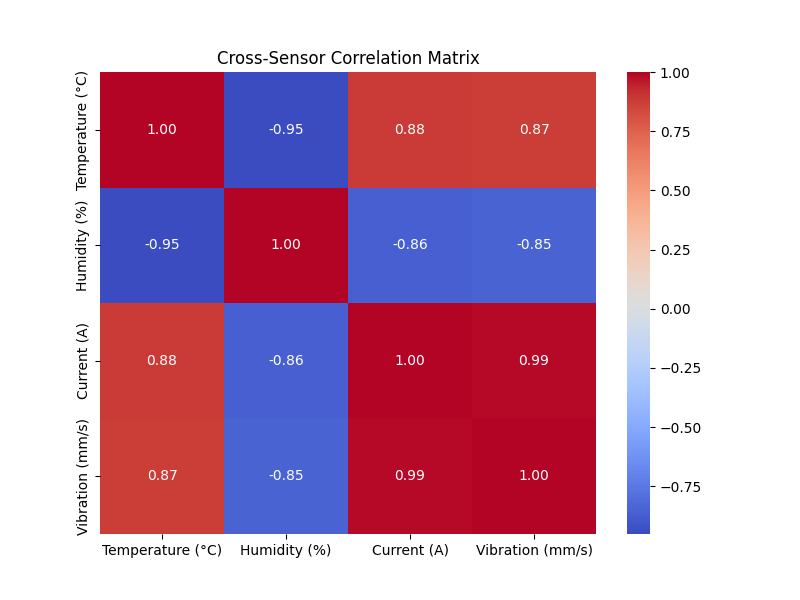

Sensor Analysis Report - 2026-04-27
1. Temporal Analysis

2. Statistical Analysis


Key Insights:
- Vibration shows a strong positive correlation with Current.
- Humidity and Temperature exhibit the expected inverse diurnal relationship.